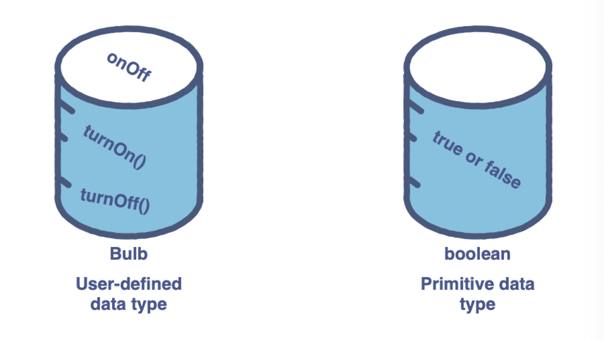

python Introduction
Introduction
Procedural programming
In procedural programming, a program is divided into smaller parts called methods. These methods are the basic entities used to construct a program. One of the main advantages of procedural programming is code reusability. However, the implementation of a complex real-world scenario becomes a difficult and unwieldy task.
Object-oriented programming
Object-oriented programming, also referred to as OOP, is a programming paradigm that includes, or relies, on the concept of classes and objects.
Anatomy of objects and classes
Objects are a collection of data and their behaviors.
A class can be thought of as a blueprint for creating objects.
User-defined data types
While primitive data types only focus on modeling the state of the object, user-defined data types can encapsulate the state and its behaviors into a unit.

Class and Objects
A class has a singular blueprint, and objects are part of a class and are differentiated by their distinct properties.
An employee has the following properties or attributes:
ID
Salary
Department
The following actions or behaviors can beperformed on an employee:
Calculation of tax on salary
Calculation of salary per day
Properties
Properties are variables that contain information regarding the object of a class. An employee object will have an ID, a salary, and the department as its properties.
*(Attributes are also referred to as properties or members. For consistency, we will be using properties throughout the course.)
Methods
Methods are like functions that have access to properties (and other methods) of a class. Methods can accept parameters and return values. They are used to perform an action on an object of a class. In the example above, we have tax() and salaryPerDay() as class methods/(menmber functions).
Declare a Class
class MyClass:
pass
obj = MyClass() # creating a MyClass Object
print(obj)
Implement properties in a class
Note that you do not initialize the values of properties, the Python code will not compile. Initializing the values of properties inside the class is necessary.
# this code will compile
class Employee:
# defining the properties and assigning them none
ID = None
salary = None
department = None
# this code will give a compilation error
class Employee:
# defining the properties and not assigning them none
ID
salary
department
Access properties and assign values
Creating properties outside a class
object.property
class Employee:
# defining the properties and assigning them None
ID = None
salary = None
department = None
# cerating an object of the Employee class
Steve = Employee()
# assigning values to properties of Steve - an object of the Employee class
Steve.ID = 3789
Steve.salary = 2500
Steve.department = "Human Resources"
# creating a new attribute for Steve
Steve.title = "Manager"
# Printing properties of Steve
print("ID =", Steve.ID)
print("Salary", Steve.salary)
print("Department:", Steve.department)
print("Title:", Steve.title)
Initializer
The initialization method is similar to other methods but has a pre-defined name, init.
The initializer is used to initialize an object of a class. The initializer is a special method because it does not have a return type. The first parameter of init is self, which is a way to refer to the object being initialized.
class Employee:
# defining the properties and assigning them None
def __init__(self, ID, salary, department):
self.ID = ID
self.salary = salary
self.department = department
# creating an object of the Employee class with default parameters
Steve = Employee(3789, 2500, "Human Resources")
# Printing properties of Steve
print("ID :", Steve.ID)
print("Salary :", Steve.salary)
print("Department :", Steve.department)
(It is important to define the initializer with complete parameters to avoid any errors. Similar to methods, initializers also have the provision for optional parameters.)